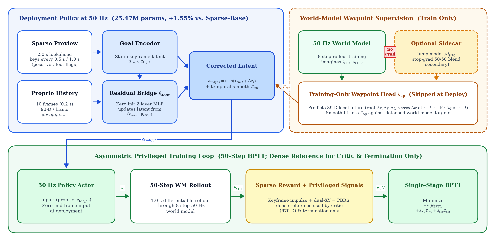
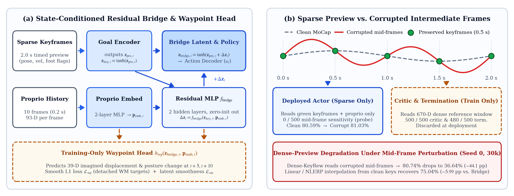
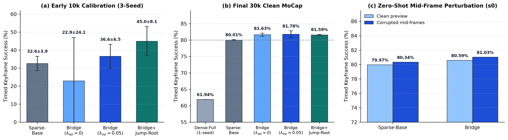
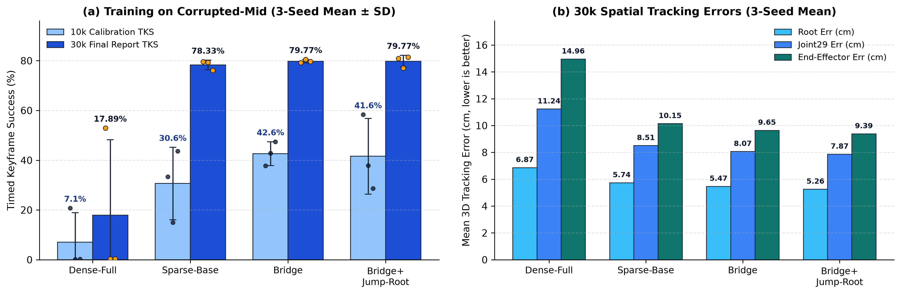

Every video shows Dense-Full (30k, best run) on the left vs. KeyFrameMimic Bridge (30k) on the right under Corrupted-Mid training on a 29-DoF Unitree G1 at 50 Hz.
Single-stage 50-step BPTT through a learned 50 Hz differentiable world model, pairing a lightweight residual latent bridge with training-only world-model waypoint supervision.
The deployed actor reads only 10-frame proprioception (930-D) and a 52-slot × 165-D 2.0 s goal tensor populated exclusively at 0.5 s keyframes (4–5 active slots; 0/500 mid-frame sensitivity). During imagined rollouts, dense references serve solely as privileged critic and termination signals.
A 2-layer residual MLP (+1.55% deployed parameters) with a zero-initialized output layer updates the 32-D keyframe goal latent at every step conditioned on proprioception, regularized by temporal latent smoothness between keyframes.
A training-only head predicts 39-D short-horizon waypoints (root displacement and yaw at t+5, t+10 plus 29 joint changes at t+5) from detached 50 Hz imagined rollouts—no teacher policy needed and discarded completely at inference.


All evaluations are conducted on the identical 120-window (4,792 planned keyframes) protocol spanning 40 LAFAN1 training-library motions on a simulated 29-DoF Unitree G1 in MuJoCo.


| Method | 10k TKS (%) | 30k TKS (%) | Completed / 120 | Root Err (cm) | Joint29 Err (cm) |
|---|---|---|---|---|---|
| Dense-Full | 19.47 ± 11.85 | 70.90 ± 1.94 | 116.7 | 4.89 | 7.50 |
| Sparse-Base | 22.91 ± 13.71 | 80.01 ± 1.72 | 114.3 | 4.45 | 7.01 |
| Bridge (No Waypoint) | 24.21 ± 11.98 | 81.63 ± 1.38 | 116.0 | 4.29 | 6.86 |
| KeyFrameMimic Bridge (Full) | 36.60 ± 3.55 | 81.78 ± 0.72 | 116.3 | 4.25 | 6.83 |
| Method | Clean TKS (%) | Corrupted-Mid TKS (%) | Mean Shift | Root Err (cm) | Limit Margin |
|---|---|---|---|---|---|
| Dense-Full | 70.90 ± 1.94 | 27.95 ± 2.83 | −42.95 pp | 4.89 → 12.29 | 2.58 → 9.36 |
| Sparse-Base | 80.50 ± 0.89 | 80.43 ± 0.83 | −0.07 pp | 4.55 → 4.74 | 2.35 → 2.37 |
| KeyFrameMimic Bridge | 81.59 ± 0.55 | 81.78 ± 0.89 | +0.19 pp | 4.26 → 4.24 | 2.58 → 2.52 |
| Method | 10k TKS (%) | 30k TKS (%) | Completed / 120 | Root Err (cm) | Joint29 Err (cm) | EE Err (cm) |
|---|---|---|---|---|---|---|
| Dense-Full | 7.06 ± 11.87 | 17.89 ± 30.34 | 114.3 | 6.87 | 11.24 | 14.96 |
| Sparse-Base | 30.64 ± 14.55 | 78.33 ± 1.93 | 113.7 | 5.74 | 8.51 | 10.15 |
| KeyFrameMimic Bridge | 42.65 ± 4.80 | 79.77 ± 0.66 | 114.7 | 5.47 | 8.07 | 9.65 |
| Bridge + Jump-Root | 41.59 ± 15.20 | 79.77 ± 2.41 | 113.7 | 5.26 | 7.87 | 9.39 |
@article{zhou2026keyframemimic,
title = {KeyFrameMimic: Humanoid Motion Tracking with Sparse Keyframe Previews and World-Model Waypoint Supervision},
author = {Zhou, Hao and Li, Yang and Ma, Lin},
journal = {arXiv preprint},
year = {2026}
}